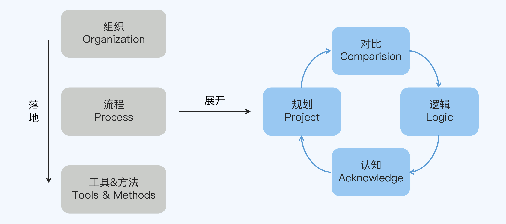
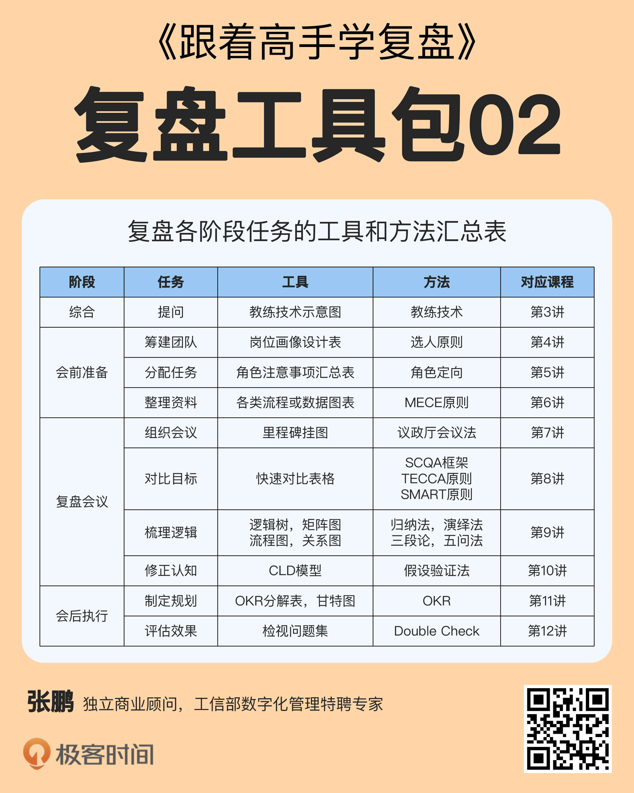
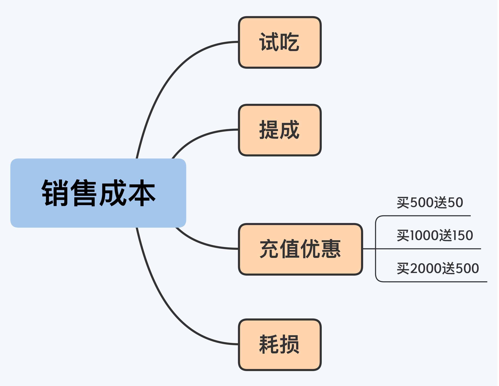
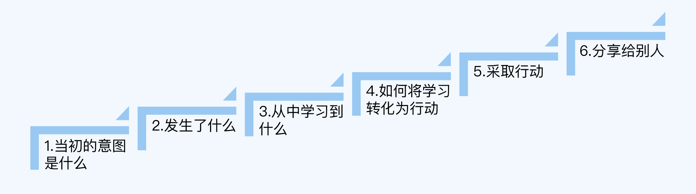

- 00 开篇词 为什么每个人都应该学会复盘？.md.html
- 01 CLAP模型：一个优秀的复盘模型是什么样的？.md.html
- 02 OPTM框架：怎么使用CLAP模型？.md.html
- 03 教练技术：怎么做复盘才能化解冲突？.md.html
- 04 制度和文化：怎么营造复盘环境？.md.html
- 05 三角法：怎么组建复盘团队？.md.html
- 06 MECE原则：怎么准备复盘资料？.md.html
- 07 五步法：如何召开一次高效的复盘会议？.md.html
- 08 事实比较：如何快速比较目标与结果？.md.html
- 09 分析原因：梳理逻辑时怎样找到切入点？.md.html
- 10 洞察规律：怎样更新认知才能找准发力点？.md.html
- 11 OKR：怎样根据复盘结论制定计划？.md.html
- 12 Double Check：怎么检查评估一次复盘的效果？.md.html
- 13 案例导学：我是怎么帮助企业做复盘的？.md.html
- 14 战略升级：5年增长100倍的跨境电商做对了什么？.md.html
- 15 业务关键点：改进一个点业绩增长50%？.md.html
- 16 组织结构设计：变动一个职位，就能带来100万_月的增量吗？.md.html
- 17 高效赋能：怎么建立流程才能把人效提升3倍？.md.html
- 18 人才培养：怎么把人才转化成实际生产力？.md.html
- 19 预算制定：人头和财务预算到底怎么定？.md.html
- 春节荐书（一）《原则》：在不确定中找到确定.md.html
- 春节荐书（二）《人类简史》：故事的力量.md.html
- 结束语 复盘，见天地见众生见自己.md.html
- 捐赠
02 OPTM框架：怎么使用CLAP模型？
你好，我是张鹏。
在上一讲，我为你介绍了CLAP模型。它包括对比（Comparison）、逻辑（Logic）、认知（Acknowledge）和规划（Project）4个环节，既能帮你优化做事细节，也能帮你优化业务战略。
同时，我也为你介绍了OPTM框架。它包括组织（Organization）、流程（Process）以及工具和方法（Tools&Methods）3个层级，分别从人、事和物3个角度充实了CLAP模型，让这个模型更加方便落地，能够为更多人创造价值。

那么，OPTM框架的3个层级分别包括哪些具体内容？CLAP模型又到底要怎么使用呢？这一讲我将为你详细说明。
OPTM框架
组织（Organization）
在OPTM框架中，第一个介绍的层级是组织。
复盘需要有专业的团队负责，这个团队一般是一个虚拟组织，也就是说，团队成员只是专门做复盘，而不是专职做复盘，他们在公司内部有自己的本职工作。这种形式有点类似于人民代表大会，人大代表们平时在各行各业工作，需要开会的时候再聚集起来。
这个虚拟组织没有统一的叫法，正式一点可以叫“复盘组委会”，随意一点也可以叫“复盘小组”。在某些公司内部可能会有“战略委员会”或“执行委员会”来组织复盘，不过复盘只是它们的临时工作。
为了方便交流，在这门课程里，我就把负责复盘的这类虚拟组织统一称为“复盘团队”。
复盘团队的职责是对重大事件或阶段性任务组织复盘，从而提升认知水平，在业务发展和内部管理等方面帮助公司和员工成长；具体工作包括推动复盘按部就班地进行，以及完善和优化复盘的流程、工具和方法等。
流程（Process）
第二个介绍的层级是流程。
复盘整体的流程分为三个阶段，如下图所示：
第一个阶段是会前准备阶段，也就是对复盘会议的方方面面做细致的筹备安排，包括主题、场地、人员、物料、流程和规则等。其中最主要的工作是三件事，筹建团队，分配任务和整理资料。
这个阶段是CLAP模型的信息输入部分。
第二个阶段是复盘会议阶段，也就是召开会议，会议议程包括陈述结果、对比目标，梳理逻辑、分析原因，提出假设、修正认知等，目的是得出复盘结论，从而指导未来的工作。
这个阶段是CLAP模型的CLA环节，也是整个复盘的重头戏。
第三个阶段是会后执行阶段，也就是让复盘会议落实为真正的成果，包括会议记录同步、资料归档、制定规划、评估效果和实践验证等。其中最主要的工作是两件事，制定规划和评估效果。
这个阶段包括CLAP模型的P环节，也包括模型的信息输出部分。
工具和方法（Tools&Methods）
第三个介绍的层级是工具和方法。
你可能会问：“工具和方法的区别是什么呢？”
在这门课程中，工具是指以具体形式呈现的技巧，比如表格和思维导图等；而方法是指以抽象形式呈现的技巧，比如原则和思路等。
比如在筹建复盘团队的时候，岗位画像设计表属于工具，而选人原则就属于方法。
这些工具和方法都是拿来就能用的，其中工具你可以直接复制，根据实际工作需求稍微修改一下就行了，而方法则可能需要在思考和实践的过程中慢慢加深理解。
我把这门课程涉及的主要工具和方法总结到了下面这个表格里，供你参考。- 
案例：CLAP模型
接下来，我就通过一个实战案例带你体验一下CLAP模型的使用过程。
我曾经帮助过一个烘焙公司做复盘。这家公司当时正处在快速增长期，每年都会开设新的门店，需要大量的资金。于是他们每到节假日，尤其是双十一、圣诞、元旦和春节前，都会有各种各样的充值回馈活动，也就是“充xx送xx”。
可是公司在营业额逐年增长的同时，利润率却在逐年下降。公司管理层觉得，问题可能出在会员充值的折扣上，但是他们又担心，如果不给折扣，就难以回笼现金，而没有现金就不能开新店了。
眼看着又快到年底了，他们希望高效地做一个复盘，能够设计出“在不伤害现金流的前提下提高利润率”的方案。其中重点关注的就是会员充值这一块的业务，他们想知道是否要调整，要怎么调整。
阶段一：会前准备
筹建团队和分配任务
因为这家烘焙公司并没有专门的战略委员会作为班底，所以需要临时组建一个复盘团队。我们采用了非常精简的配置，公司总经理担任主持人，主导整个复盘流程；我担任引导师，负责提问和逻辑引导；财务代表、营销代表和一线区域主管担任陈述人，负责整理和介绍各项资料。
资料准备
于是，财务代表提取了单品的物料成本、售价和销售数量，以及包括人工、场租和折旧在内的固定成本；营销代表打包提供了公司过去两年的所有营销策略；一线区域主管画出了常规业务的流程图。
因为这些数据和资料都是现成的，所以会前准备工作只用了不到半小时。
阶段二：复盘会议
对比目标
这家公司的盈利公式非常简单：
销售收入 - 成本 = 利润
利润率 = 利润/销售收入
通过比对数据，我们发现，利润率跟去年相比下降了15%。
虽然利润率下降了，但其实销售收入和利润都是增加的，这就说明成本也在增加，而且增幅更大。我们初步判断，原因很可能出在成本控制上。
梳理逻辑
接着，我们用关键事件法把公司的整个价值创造过程分解为生产价值链：
通过对整个价值链的分析，我们发现前5个环节的成本比例并没有显著增加，所以问题可以定位在销售环节。
然后，我们用情境还原法对销售环节的成本做了全面拆解，如下图所示：

调用财务数据计算每一个部分的比例之后，我们发现，参加“买2000送500”这一项充值优惠活动的人数比例不大，但是送出的优惠总金额非常大。
财务快速推算了一下，如果去掉这一项，利润率会大大提升。
修正认知
于是我提出了一条洞察：对烘焙公司而言，总用户数比一次性充值金额更重要，因为产品品质足够好，所以并不担心用户复购问题。
基于这条洞察，我们做出了一个假设：选择“2000送500”的都是忠实客户，就算门店2C业务把这个活动直接砍掉，他们还是会选“买1000送150”的活动，所以总的充值人数不会减少很多。这些活动用过往的数据模型计算，对总销售额的影响并不大。
现在因为要顾及现金回笼，开设更多门店，服务更多客户，我们基本上确定了一个决策方向：对“买2000送500”采取一些动作，从而降低销售成本，提升利润率。
就这样，针对“在不伤害现金流回报的前提下提高利润率”这个目标，我们通过CLAP模型摸索出了一条有可能成功的路，整个复盘会议只用了2个小时。
阶段三：会后执行
制定规划
基于复盘会议形成的决策方向，我们制定了以下措施：
- 对于原有的2000元充值卡客户，规则不变。
- 新的充值营销策略中，去掉“充2000元送500”这一项。
- 强化“充1000送150”，一次买两张，送200元等值新品（推新）。
评估效果
最后，我们通过效率、氛围、信心等角度评估了这次复盘的效果。
效率：会议流程开放且高效，达成了有效结论，没有超时。
氛围：所有人的参与度都非常高，对过程和结果持正面积极态度，这和整个过程不是追责，而是群策群力关注如何围绕“不影响现金收入，但是降低销售成本”来规划。
信心：经过调研，团队整体对未来的目标达成非常有信心（信心指数四档：没信心/不好说/有信心/非常有信心）。
总的来说，这次复盘非常成功。
适用场景
这个案例虽然并不复杂，但是“麻雀虽小，五脏俱全”，它已经囊括了整个复盘流程中的几乎所有事情。像这样一套标准的复盘流程，非常适合综合的、复杂度高的、时间跨度长的业务复盘或项目复盘。
不过在实际工作中，我们不是每次复盘都要像这样“一招一式，拳拳到肉”。比如突发灾难等紧急事件，我们必须快速响应；又比如只是一个规模比较小的问题，我们用不着动用太多的资源。
这些情况下，我们就需要结合具体场景的需求和条件，针对性地简化复盘流程，从而提高效率，节省资源。（实际上，在前面这个案例中，会前准备阶段就相对比较精简了。）
美国陆军提出的任务后检视方法，又叫AAR模型，就可以看成CLAP模型的一个特定简化版本，适合需要现场决策和指挥的事情。
AAR（After Action Review）
AAR模型有6个要素，也就是4W2H：
- Who 参与者都有谁？主要角色包括：组织者、评论者、参与者。
- What 讨论什么？关键事件。
- When 何时？一般而言，最好马上开始。
- Where 何地？离现场越近越好。
- How long 需要多长时间？一般15分钟～1个小时。
- How to do 怎么做？一般包括6个步骤。
其中“怎么做”的6个步骤，也就是AAR模型的复盘部分。

战争环境的不确定性和紧迫性造就了AAR模型复盘的特点，它非常敏捷，目标感极强，角色分工清晰，所以也非常适合同样具有不确定性同时又要求时效性的商业环境。
对于创新型企业或者转型期企业，这种模型应用很广泛，尤其是在扁平的项目化组织中。接下来，我还是用之前那家烘焙公司的例子来为你说明。
案例：AAR模型
在2020年新冠疫情期间，刚才提到的那家烘焙公司的业务也受到重创，老板发现年初设定的营业额目标缺口很大（AAR中的1，CLAP的C）。这是因为在商场不许进人之后 ，以前的所有营销策略都行不通了（AAR中的2，CLAP的L）。
这家公司的高管团队约我开电话复盘会议，一起研讨对策，商量的结果就是：既然人来不了，咱们就要走出去。
很多店长都加了客户的微信，之前他们都是被动地等客户发信息买产品，很少主动联系客户，因为怕打扰到对方，引起对方反感。
的确，每天一对一发产品信息，不管是优惠信息还是新品信息，是很容易让对方反感。
但是我们提出了一条假设：如果在主题群里发这些信息，只要对方不退群，仍然保持关注，那么我们就有机会（AAR中的3，CLAP的A）。
虽然没有社群运营的经验，但这件事情也没什么技术难度。于是我们迅速地制定了社群运营方案，并选取了总部所在地的三家代表性的门店试运营，两家商场店，一家小区店，它们都属于最会和客户聊天的团队。
每天后台营销部门都会推出各类产品组合的海报图文和小视频，店长以小区为单位拉群，定时在群里发布这些内容营造气氛，并通过私信和意向客户沟通转化（AAR中的4，CLAP的P）。
结果几天下来，每天的营业额几乎追平了门店正常时期的营业额（AAR中的5，CLAP的会后执行）。
后来，我们吸取了社群的沟通经验并形成FAQ指南，结合这个简单粗暴的社群营销方案形成MVP推广到了其他区域的门店，也都非常有效。（AAR中的6，CLAP的会后执行）后续各个门店在初始MVP的基础上优化迭代，形成更适合各自门店实际情况的社群运营方案。
小结
这一讲，我详细讲解了OPTM框架，并且以烘焙公司为例介绍了CLAP模型和AAR模型的使用方法。现在，我们回顾一下重点内容。
- 在烘焙公司提高利润率的例子中，我们提出假设，选择“买2000送500”的主要是忠实粉丝，就算没有这个活动，他们依然会选择“买1000送150”，对总销售额影响不大。于是我们砍掉了这个活动，削减了成本，从而在不伤害现金流回报的前提下，提高了利润率。
- 标准的CLAP模型复盘流程适合综合的、复杂度高的、时间跨度长的业务复盘或项目复盘。但是在实际工作中，我们需要结合具体场景的需求和条件，针对性地简化复盘流程，从而提高效率，节省资源，比如AAR模型就适合需要现场决策和指挥的事情。
- AAR模型是具备CLAP模型的特点的简化版本。在烘焙公司应对疫情的例子中，我们提出假设，如果在主题群里发产品信息，只要客户不退群，就不会太打扰对方。于是，我们制定了社群营销方案，追平了正常时期的营业额。
思考题
这就是今天的全部内容，最后留一道思考题给你吧。
对于普通人来说，最常见的应用场景也许就是对自己工作的某个阶段（日/周/月/季度/半年/年或者实习期/试用期/入职一年/两次晋升之间）来做复盘了。
你能针对自己近段时间的工作，用这一讲学到的方法来做一次复盘吗？你觉得流程应该怎样简化呢？复盘之后你得到了什么有价值的结论吗？
欢迎你把答案写到留言区，和我一起讨论。
© 2019 - 2023 Liangliang Lee. Powered by gin and hexo-theme-book.